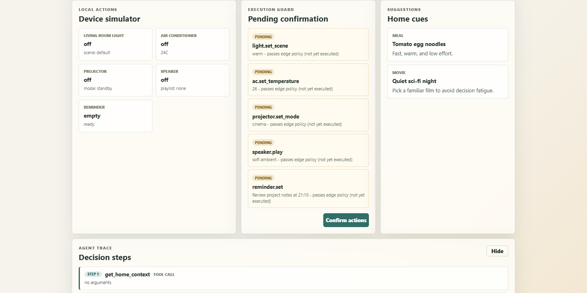

Engineering journal · Edge AI · Smart home
Building HomeCue Edge with Qwen Cloud
A practical account of turning local home context into explainable routines while keeping device execution behind an edge policy and an explicit human decision.

The Product Problem
A smart-home agent should understand more than a single command. Coming home tired on a warm evening might involve lighting, climate, entertainment, food, and a reminder. That context makes an agent useful, but it also makes the system sensitive: schedules, preferences, occupancy, and device state should not move freely between services.
The other risk is authority. A language model is good at producing a plan, but a fluent answer is not permission to change a home. I wanted the model to reason while the edge retained control over what could run and when.
The model proposes. The edge validates. The person confirms.
That sentence became the product contract for HomeCue Edge. It shaped the API, the web console, the firmware path, and the fallback behavior.
The Edge-to-Cloud Loop
The gateway starts with simulated home context and reduces it to a compact privacy summary. Qwen Cloud receives that summary and returns structured routine JSON. The result is still only a proposal: the edge guard checks every device, command, and value, and the user must confirm before the separate execute endpoint changes state.
- 01Local context
- 02Privacy summary
- 03Qwen proposal
- 04Policy precheck
- 05Human confirmation
- 06Guarded execution
Agent mode adds an inspectable tool trace: read context, query device state, precheck proposed actions, then emit the plan. Offline mode skips the cloud call and produces a deterministic local routine through the same confirmation boundary.
Connecting Qwen Cloud
HomeCue Edge uses the OpenAI-compatible interface exposed by Alibaba Cloud Model Studio. Provider selection remains configuration rather than application logic, so the gateway can require Qwen for verification or use a deterministic local planner for repeatable demonstrations.
ACTIVE_PROVIDER=qwen
QWEN_MODEL=qwen3.7-plus
QWEN_PLANNER_PROVIDER=qwenThe cloud response follows a strict schema: summary, privacy summary, reasoning steps, actions, and suggestions. Pydantic validates the shape before any action reaches the guard. Required-provider mode raises on a cloud failure instead of silently presenting a fallback as a successful model result.
The planner sees only the local summary. Raw schedules or household records are not required for the routine, which keeps the cloud boundary small and explicit.
What Broke, and What Fixed It
The useful work was not the first successful response. It was isolating each failure without weakening the product contract.
-
Transport
TLS connections failed even though DNS and port 443 were healthy. The process had inherited a stale loopback proxy. A direct, process-scoped bypass restored the connection without changing system networking.
-
Allocation
The configured qwen-plus model returned a free-tier allocation error. The account and API key were valid; that model's allocation was exhausted. Model inventory and the console showed that qwen3.7-plus still had an active free allocation, so the planner moved to that model.
-
Latency
A small qwen3.7-plus request worked, but the structured routine exceeded the gateway's 30-second read timeout. A controlled comparison showed that default thinking caused the delay. Setting
enable_thinking=falsefor this model returned valid routine JSON in about six seconds. -
Regression
The compatibility behavior was added behind a model-specific condition and a red-green regression test. Other providers, the deterministic planner, and the default API contract remained unchanged.
Why the Model Never Executes Devices Directly
Planning and execution are separate endpoints. A plan can include five actions and still change nothing. The console displays those actions as pending, together with a read-only policy precheck. Only the confirm action sends the approved subset to the guarded execute endpoint.
The allowlist is deliberately narrow. It defines valid devices, commands, and values for lighting, climate, projector, speaker, and reminders. Unknown combinations are rejected locally, even when their JSON is syntactically valid.
In the fresh Qwen verification, the model proposed five actions. Four passed the guard and one was rejected. That rejection is valuable evidence: the policy is an independent control boundary, not a decorative success message.
Evidence, Not Just a Demo
A deterministic demo is useful for presentation, while a provider-forced verification is
useful for truth. HomeCue Edge keeps both. The current verification records
provider=qwen, model=qwen3.7-plus, and
mode=qwen_cloud_reasoning.
The broader local gate also runs TypeScript compilation, ESLint, the Vite production build, a software-demo profile contract, whitespace checks, and repository secret scans. Hardware voice and speaker work remain an enhancement path rather than a prerequisite for the software loop.
What I Learned
- Make fallback visible. A fallback is a reliability feature only when the UI and proof data identify it honestly.
- Treat policy as product behavior. Users should see that a proposal is pending and understand when state changes.
- Diagnose boundaries one at a time. DNS, TCP, proxy behavior, key validity, model allocation, inference latency, schema validation, and execution policy are different layers.
- Optimize for reproducible truth. A local deterministic path and a forced real-provider path answer different questions, and both are necessary.
What Comes Next
The next engineering step is replacing simulated device state with a real integration layer through Home Assistant, Matter, or vendor APIs while preserving the same propose-confirm-execute contract. The ESP32-S3 terminal can then act as a room-level voice and confirmation surface rather than the owner of policy.
Longer term, local inference can take over privacy summarization and selected offline planning. Qwen Cloud remains the stronger reasoning layer when the network is available; the edge remains the authority over household state.